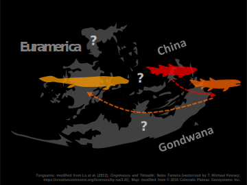

FOSSIL RECORD BIAS IN MACROEVOLUTIONARY ANALYSES

Fossil record bias confounds analyses of species dispersal through space and time. Circa 400 million years ago, fish-like ancestors of tetrapods, four-limbed vertebrates, moved from water to land. Using this transition as a case study, Jacob Gardner, Chris Organ, and I propose a proxy for fossil sampling bias that incorporates geographic information. We initially found that the water-land transition occurred in Euramerica and that cross-continent dispersals tend to be rapid. However, these results are unreliable because they can be explained by insufficient fossil record in all regions except Southern Euramerica.
BIRD TAIL DEVELOPMENT AND EVOLUTION

The long tail of Mesozoic dinosaurs rapidly evolved into the short, terminally-fused tail of living birds. Two fossil specimens (Zhongornis haoae and the dinosaur tail preserved in Burmese amber) exhibit a transitional tail morphology: short and unfused. However, our study on bird tail development warrants re-interpretation of these transitional species. Bird tail vertebrae change radically with growth. As birds reach maturity, the last four to six vertebrae fuse into a compound bone called the pygostyle. Vertebral side projections mineralize long after hatching. Zhongornis, as a juvenile, might not have yet formed a pygostyle, and the dinosaur tail, also immature, might be avian.
BIRD PRELAYING EGG ROTATION
Eggs are known to rotate 180° in utero around the short axis in chickens and six other bird species. Egg rotation may have evolved in association with the separation of the pubic bones, which appeared at least 95 million years ago. In utero egg rotation may occur in all birds and select for a wide pelvic canal in the females, as a narrow one could cause complication. Using a comparative approach, we find no evidence for universal rotation across birds, assuming it shapes pelvic morphology.
Collaborators: Isabelle Brenes, Jacob Gardner, Nic Rawlence, Alan Tennyson, Lázaro Viñola López, Chris Organ, and David Varricchio.
submitted to The Auk
GENOTYPE-PHENOTYPE ASSOCIATION
Phylogenetic trees with branch lengths scaled to the amount of molecular evolution (substitution) explain trait data better than those to time. Molecular evolution matches trait evolution. For comparative studies, researchers should use molecular branch lengths whenever possible.
Collaborator: Chris Organ
to be submitted to Systematic Biology